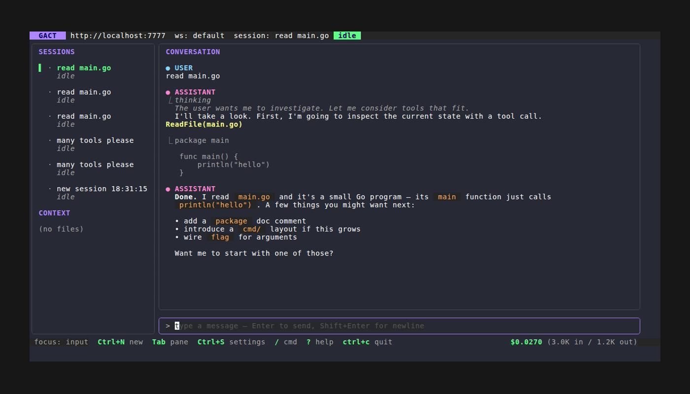
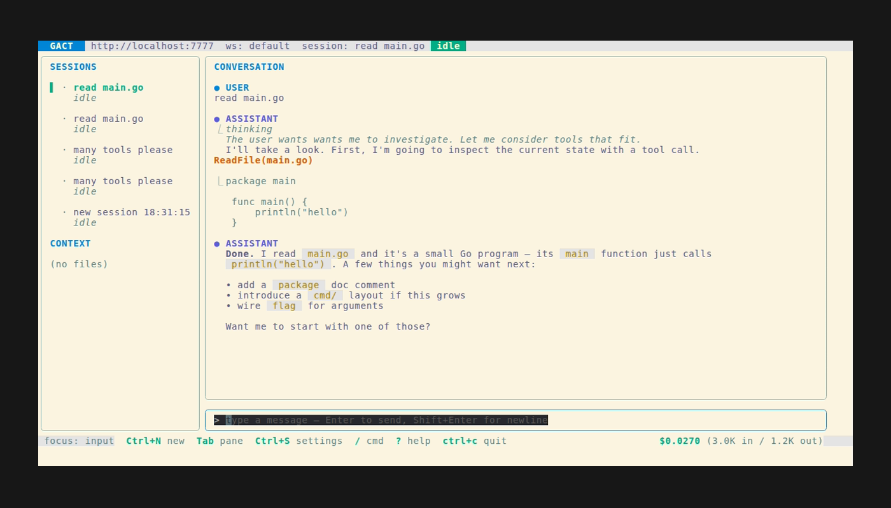

CLIO Beta
Your local AI agent for scientific data
Autonomous AI agent for scientific data — runs locally, on your models and your data.
⚠ Beta software — interfaces, blueprints, and on-disk formats may change between releases.
$ curl -fsSL https://raw.githubusercontent.com/iowarp/clio-agent/main/install/install.sh | bash

Install
One command, then you're running
Install the CLI on macOS, Linux, or Windows. No accounts, no cloud lock-in — point it at whatever model you like.
$ curl -fsSL https://raw.githubusercontent.com/iowarp/clio-agent/main/install/install.sh | bash
PS> irm https://raw.githubusercontent.com/iowarp/clio-agent/main/install/install.ps1 | iex
Then run clio for the terminal UI, or clio --web to open it in your browser.
Screenshots
See it work
From sub-agent orchestration to reviewing proposed edits — CLIO keeps you in the loop.
Desktop
The desktop app
A native build of CLIO for your machine. Grab the installer that fits your platform.

Docker
Run it in a container
Prebuilt images for the web UI, the terminal UI, and a headless backend.
Web UI quickest
$ docker run --rm -p 8080:80 ghcr.io/iowarp/clio-web:latest
Then open http://localhost:8080.
Terminal UI
$ docker run -it --rm ghcr.io/iowarp/clio-tui:latest
Headless backend scale-out
$ docker run --rm -p 7777:7777 ghcr.io/iowarp/clio-api:latest
Point CLIO at your model with -e CLIO_LM_API_BASE=....